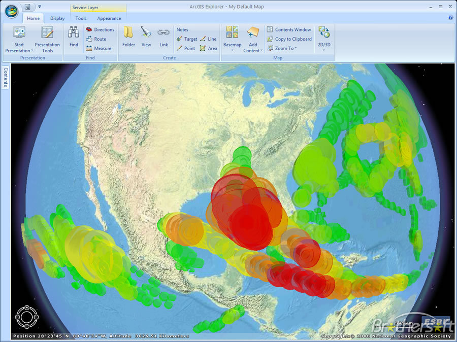

Programmation sous SIG
ENSG
2017
Introduction
Organisation du cours
- 8 séances de TD
- QCM noté lors de la dernière séance
Programme
- Qu'est qu'un SIG ?
- Quels développements sous SIG ?
- Le système ArcGIS
- ArcGIS pour le développeur
Généralités
Définition
Un système d'information géographique (SIG) est un ensemble organisé de ressources pour collecter, stocker, traiter et diffuser de l'information géographique.
Composantes d'un SIG
- Des aspects multiples
- composante technologique : logiciels, données, matériels
- composante organisationnelle : personnes, savoirs-faire
- Des fonctionnalités communes : règle des 5A

Les 5A
- Acquisition : collecter de la données sous forme numérique
- Affichage : restituer graphiquement l'information
- Abstraction : rendre compte de la modélisation de la réalité
- Analyse : réaliser des études
- Archivage : stocker les données dans un SGBD
Evolution des SIG
- 1970 : SIG bureautique réservé aux spécialistes
- "faire des cartes"
- 1980-90 : diffusion dans d'autres corps de métiers
- armée, cadastre...
- 2000 : démocratisation de l'information géographiques
- sites comme GoogleMap
- Aujourd'hui : grand public consommateur régulier d'information géographique
- usages multiples (géolocalisation, calculs d'itinéraires...)
- plateformes variées (PC, smartphone...)
- nombreux utilisateurs
Les besoins
- Grand public consommateur régulier d'information géographique...
- Mais pas de compétence SIG
- => besoin d'une information géographique facilement exploitable
- développements, programmation
- infrastructures évoluées (serveurs SIG)
Le serveur SIG
- Fonctionnalités attendues d'un serveur SIG
- Héberger des ressources SIG
- Publier des ressources SIG
- Permettre d'interagir avec les ressources SIG
Partage de ressources
- Ressources partagées sous forme de services

Des architectures de serveur SIG

Des architectures de serveur SIG

Développements sous SIG
Intérêt des développements
- Répondre aux besoins non couverts en standard
- faciliter des opérations
- simplifier des applications
- sortir le SIG du bureau
- ...
Types de développements
- Développements bureautiques
- personnalisation
- automatisation
- extensions
- création d'applications
- Développements de solutions web
- Développements de solutions mobiles
Quels SIG pour développer
- Des interfaces de développement dans tous les SIG
Quels SIG pour développer

Quels SIG pour développer
Quels SIG pour développer

Quels SIG pour développer
- Pourquoi ArcGIS pour ce cours ?
- ...
Le système ArcGIS
Généralités
Solutions bureautiques
| Le SIG bureautique historique | Le viewer gratuit | Les applications métier |
|---|---|---|
| ArcGIS for Desktop | ArcGIS Explorer | ArcGIS Engine |
 |
 |  |
ArcGIS for Desktop
- 5 applications
 |
 |
|---|---|
| Suite ArcMap | ArcGIS Pro |
ArcGIS for Desktop
- Applications disponibles en 3 niveaux de fonctionnalités
- Basic (ArcView) => faire des cartes, géotraitements simples
- Standard (ArcEditor) => outils d'édition, géodatabases avancées
- Advanced (ArcInfo) => géotraitements avancés (ex : topologie)
- +des extensions
- Spatial Analyst, Data Interoperability...
Un peu de vocabulaire
- Du côté "données"
Un peu de vocabulaire
- Du côté document ArcMap (map document / mxd)

Les géodatabases
| Caractéristique | Géodatabase personnelle | Géodatabase fichier | Géodatabase entreprise |
|---|---|---|---|
| Format | Fichier Access | Système de fichiers | Système de fichiers |
| Taille max | 2 Go | Quasi illimitée | Illimitée |
| Utilisateurs en lecture | < 10 | < 50 | Multi-utilisateur |
| Utilisateurs en écriture | 1 seul | 1 par jeu de données | Multi-utilisateur |
Nous n'utiliserons quasiment jamais de géodatabase personnelle.
ArcGIS Entreprise (ArcGIS for Server)
- Solution de serveur SIG complet
- héberger
- partager
- créer des applications web SIG
ArcGIS Entreprise (ArcGIS for Server)
- 3 niveaux de fonctionnalités
- Basic
- Standard
- Advanced
- 2 niveaux de capacité
- Workgroup (10 utilisateurs, 10GB, 4 coeurs)
- Enterprise ("illimité")
Les services ArcGIS
| Type de service | Fonctionnalités disponibles | Ressource SIG |
|---|---|---|
| Carte | CartographieAccès aux donnéesAnalyse de réseauWCS, WFS, WMS, KML | Document ArcMap (.mxd)Définition de service de carte (.msd) |
| Géocodage | Géocodage | Localisateur d'adresses (.loc, .mxs) |
| Géodonnées | GéodonnéesAccès aux données | Géodatabase fichierFichier de connexion à une base de données (.sde) |
| Géotraitement | Géotraitement | Boite à outils |
| Globe | Globe | Document ArcGlobe (.3dd) |
| Imagerie | Traitement d'imageWCS, WMS | Jeu de données rasterMosaïque ou fichier de couche faisant référence à un jeu de données raster ou mosaïque |
Utiliser des ressources ArcGIS
- Services exposés via 4 APIs
- API REST
- API SOAP
- API KML
- API OGC
- Catalogue des services REST
Options de déploiement
Développement d'un client web : que choisir ?
- Client léger
- Application web clé en main
- Application mobile
- ...
- Client lourd compatibles
- ArcMap, ArcGIS Pro
- Développement d'un client riche avec les API REST
Architecture ArcGIS for Server
Portal for ArcGIS
- Intermédiaire entre le serveur et les clients
- Administrer
- Partager
- Créer des cartes
- Créer des applications
Portal for ArcGIS
ArcGIS Online
- http://www.arcgis.com
- Un SIG dans le cloud
- gestion collaborative de cartes et services géographiques
- serveur SIG sur le web
ArcGIS Online
Les solutions mobiles
- Gammes d'outils du professionnel au grand public
- ArcPad
- ArcGIS Mobile
- ArcGIS for Smartphones
- Collector for ArcGIS
Les générateurs d'applications

Des applications clés en main
Parlons argent
- ArcMap :
- Advanced : 7000€
- Standard : 5000€
- Basic : 1000€
- ArcGIS Entreprise (Workgroup) :
- Basic : 1000€
- ArcGIS Entreprise (Entreprise) :
- Advanced : 20000-30000€
- ArcGIS Online :
- 10 jetons = 1€
- Feature Service Storage : 10MB = 2,4 jetons
- Tile and data storage : 1GB = 1,2 jetons
- plus les coûts de maintenance...
ArcGIS pour le développeur
Familles d'API
- 4 grandes familles
- API Python
- API ArcObjects et ArcGIS Runtime
- APIs web
- APIs mobiles
API Python
- 2 besoins principaux
- Automatiser des traitements
- Ecrire des traitements personnalisés
- Développements intégrables sous forme de boîtes à outils
- Depuis la 10.2 : déployements sous forme d'extensions
L'API ArcObjects
- API fondamentale d'ArcGIS
- ArcObjects = composants de base d'ArcGIS (composants COM)
- Création d'extensions ou d'applications autonomes
- Consomable via différents SDK

ArcGIS Runtime
- Remplaçant des ArcObjects
- Indépendant des composants COM
- Noyau d'exécution et différentes API/SDK pour développer
ArcGIS Runtime
APIs web
- Générateurs d'applications (Web AppBuilder)
- Templates d'applications (Flex et Silverlight)
- 3 API web
- ArcGIS for Javascript
- ArcGIS for Flex
- ArcGIS for Silverlight
- Toutes basées sur l'API REST d'ArcGIS for Server
APIs web